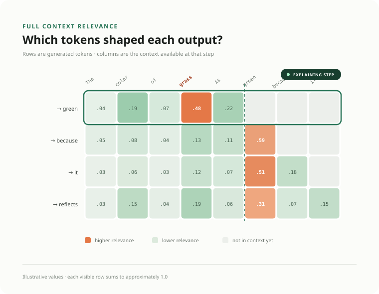
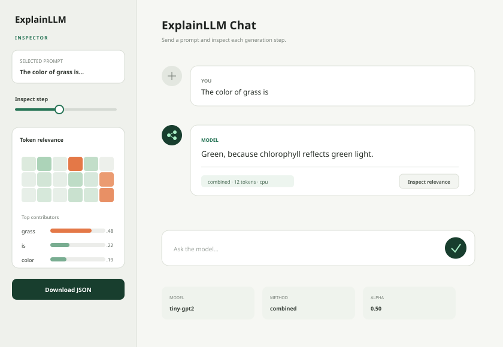

01
Thecolorofgrassis
Tokenize the prompt
The Hugging Face tokenizer converts text into token IDs. Exact token boundaries depend on the selected model’s vocabulary.
- Input
- Prompt text
- Produces
input_ids+ mask
ExplainLLM traces every generated token back to the prompt and prior output, turning model internals into readable relevance scores, heatmaps, and graphs.
$ pip install -e ".[all]"

At step t, the model sees the original prompt plus everything it has already generated. ExplainLLM computes a normalized relevance vector over that exact context, then repeats the process for the next token.
Use a tiny public model on CPU for a first run. Move to CUDA and a larger causal LM when the workflow feels right.
from explainllm import calculate_relevance, RelevanceConfig
config = RelevanceConfig(
model_id="sshleifer/tiny-gpt2",
device="cpu",
max_new_tokens=12,
relevance_method="combined",
)
result = calculate_relevance(
"The color of grass is", config=config
)
print(result["generated_text"])
print(result["token_details"][0]["top_contributing_tokens"])# Install core + visualization dependencies
pip install -e ".[viz]"
explainllm run \
--prompt "The color of grass is" \
--model sshleifer/tiny-gpt2 \
--method combined \
--max-new-tokens 12 \
--visualize \
--export result.json \
--heatmap relevance.pngpip install -e ".[app,viz]"
streamlit run src/streamlit_app/app.py
# Open http://localhost:8501
# Choose a model, method, dtype, and token limit in the sidebar.# .env — HF_TOKEN is only needed for gated models
HF_TOKEN=hf_your_token_here
MODEL_ID=meta-llama/Llama-3.2-1B-Instruct
docker compose up --build
# UI http://localhost:8501
# Backend http://localhost:8000/health
# Model service http://localhost:8001/healthHF_TOKEN first. Model weights are downloaded by Hugging Face and can require substantial memory and disk space.ExplainLLM runs a small analysis loop around a decoder-only causal model. Walk through it using The color of grass is as the prompt.
The Hugging Face tokenizer converts text into token IDs. Exact token boundaries depend on the selected model’s vocabulary.
input_ids + maskA forward pass uses eager attention and asks the causal LM for logits, attention tensors, and hidden states.
[batch, seq, vocab]argmax selects the vocabulary ID with the largest final-position logit. The current implementation is deterministic.
The selected method scores every token in the current context. Scores are normalized to sum to approximately 1.0.
grass → 0.48The · color · of · grass · is→ greenThe · color · of · grass · is · green→ becausegreen joins the context before the next forward pass. Later relevance vectors can therefore point to prompt tokens and previously generated tokens.

Pick an output row. The first row explains why the model selected green.
Scan its context. grass is strongest at 0.48, followed by is at 0.22.
Move to the next row. The green column is now active because that token joined the context.
Compare roles. Prompt tokens show grounding; generated tokens show self-conditioning.
A balanced first view that blends where information was routed with what the selected logit was locally sensitive to.
alpha; default 0.5.0.6 × attention + 0.4 × gradientUses the model’s attention routing, while giving focused heads more influence than diffuse heads.
focused head → larger voteMeasures how strongly each input embedding participates in the selected next-token logit near the current input.
larger local sensitivity → larger scoreApproximates how attention can carry information through the full stack instead of inspecting only upper layers.
direct + indirect layer pathsalphaAttention weight in combined mode. Default 0.5.suppress_bosDampens a detected BOS attention sink. Default true.use_top_layers_fractionUpper-layer share used for attention. Default 0.5.The Streamlit app keeps prompts in a run history and opens each explanation in a sidebar inspector.

Read the scores as model-behavior signals. They are strongest when used to compare tokens within one generation step and to triangulate across methods.
argmax, not sampling or beams.The top-level dictionary keeps model text, token identities, raw per-method relevance, and a human-friendly step trace.
generated_textDecoded output onlyfull_textPrompt and generated outputprompt_tokensCleaned prompt token stringsgenerated_tokensGenerated vocabulary IDsrelevance_per_tokenRaw method and layer scorestoken_detailsReadable per-step explanations{
"step": 0,
"generated_token": " green",
"token_id": 1234,
"top_contributing_tokens": [
{
"token": "grass",
"position": 3,
"is_prompt": true,
"relevance": 0.48
}
],
"full_relevance": [0.04, 0.19, 0.07, 0.48, 0.22],
"context_tokens": ["The", " color", " of", " grass", " is"],
"prompt_len": 5
}Models must load through AutoModelForCausalLM, return attention tensors, and expose a supported embedding layer.
Not currently supported: encoder-decoder, masked-LM, classifier-only, multimodal, or unrecognized embedding architectures.
Use combined for a balanced view. Switch to attention for a faster structural signal, or compare several methods when a conclusion matters.
Autoregressive models feed their prior output back into the next step. Including those tokens reveals when a response starts relying more on itself than on the original prompt.
Not as absolute measurements. Each relevance vector is normalized within its own step, so the safest comparisons are between tokens in the same context.
Yes for small models. Use sshleifer/tiny-gpt2 or distilgpt2 on CPU; larger models and gradient-based traces are much more practical on CUDA.